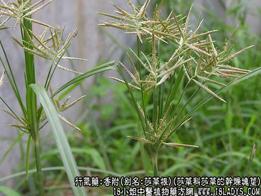
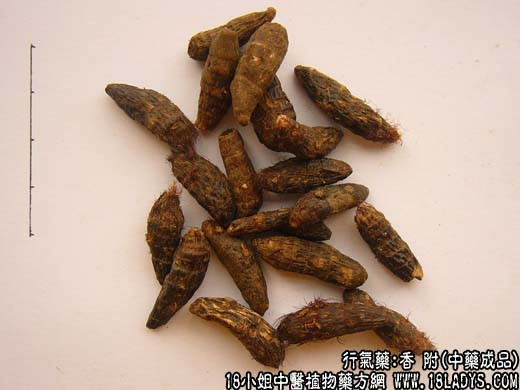
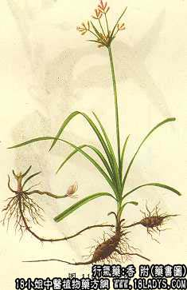

本品为常用中药。始载《名医别录》，列为中品，原名“莎草”至《唐本草》始称“莎草根香附子”，因其根相附连续而生，可以制香料，故名。
别名：香附子、莎草根。
来源：为莎草科多年草本植物莎草的干燥块茎。野生于海、河、溪边沙地上较多。
产地：主产于山东、湖南、湖北、浙江、河南、河北、全国大部分地区均有生产。
性状鉴别：根茎略呈纺锤形，大小不等；长约1.5～3厘米，直径约0.5～1厘米。表面棕褐色。全体具多数环节纹，附生棕色毛须及残留的根痕（带有毛须的称毛香附，去净毛须的称光香附，碾去外皮的称香附米）。质坚硬，经过蒸煮的折断面有光泽，色显紫红，直接晒干的色白而显粉性。外皮与中间圆心分层明显，中心色略深，散步有黑色点状维管束。气芳香，味辛苦。以粒大，色紫红，光润，质坚实，香气浓者为佳。
主要成分：含挥发油，其中主要为香附稀，香附醇，并含脂肪酸等。
功效与作用：理气解郁、调经止痛。其药理作用研究得还很不够。现代实验初步发现有：1、镇痛作用。香附的乙醇提液能显著地提高实验动物（小白鼠）的痛阈。
2、抑制子宫收缩，使子宫肌肉弛缓，但其作用不及当归。
炮制：碾碎，醋炒。
性味：辛、微苦、平。
归经：入肝、三焦经。
功能：理气解郁，调经，止痛。
主治：肝胃不和，气郁不舒，胸腹胀满，月经不调，痛经等症。
临床应用：前人称本品为“气病之总司，女科之主帅”，广泛用于气郁所致的疼痛，尤其妇科病症和月经不调。
1、治月经不调、月经痛。见证有肝郁气滞，与神经精神因素（如情绪抑郁或暴躁、精神紧张）有关的月经疼痛更适宜。可用香附配四物汤，或加乌药、延胡索。如属经来后期，小腹虚寒作痛，可用香附配当归、川芎、杜仲、艾叶等，方如香附芎归汤，既能调经，又能止痛。
2、治气郁疼痛。如属肝郁所致肋痛（多见于慢性肝炎），可用香附配逍遥散。
如胃脘气痛，兼有吞酸呕吐，嗳气食少（可见于胃神经能症、胃、十二指肠溃疡病，或慢性胃炎），偏于热的，配栀子、川连、陈皮、如香附散，偏于寒，配良姜、吴茱萸。此外，伏暑湿所致胁痛，或咳或不咳、无寒但潮热，可配旋复花等行气舒肝化郁，方如香附旋复花汤。外感而兼有肝气郁结者，可用香附、苏叶等发汗解郁止痛，如香苏饮。
使用注意：有血虚内热，或月经先期者不宜用。
用量：6～9g。
处方举例：1、香附芎归汤（《肾氏尊生书》）：香附9g，川芎4.5g，当归12g，白芍9g，艾叶（炒）9g，熟地30g，麦冬9g，杜仲9g，橘红3g，青蒿6g，甘草3g，水煎服。
2、香附散（《沈氏尊生书》）：香附9g，栀子6g，川连3g，陈皮6g，法夏6g，水煎服。
3、香附旋复花汤（《温病条辨》）：香附3g，旋复花9g（布包），茯苓9g，苏子9g，陈皮9g，制半夏9g，薏苡仁15g，水煎，分三次温服。